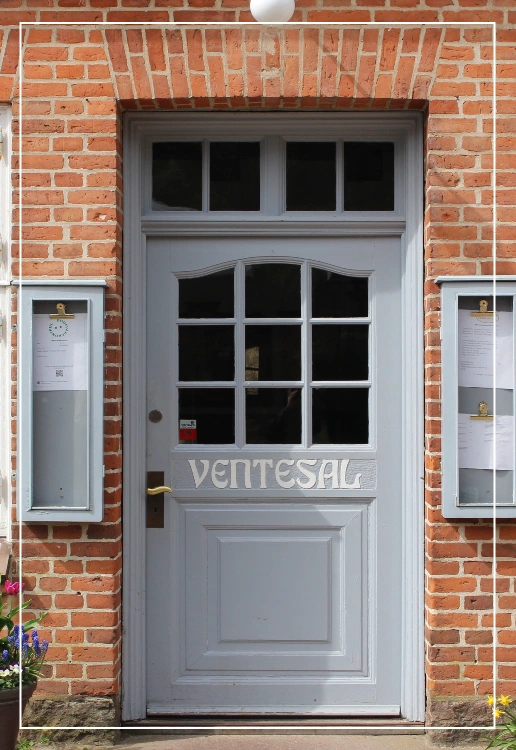

Velkommen til
RESTAURANT VRADS STATION

Vi byder dig hjerteligt velkommen til Restaurant Vrads Station, en perle midt i den smukke danske natur.
Vores unikke beliggenhed i den historiske stationsbygning fra 1929 giver en særlig atmosfære, hvor du
kan nyde en gastronomisk oplevelse i charmerende og nostalgiske omgivelser.
Restaurant Vrads Station er ikke kun et sted at spise, men også et sted at skabe minder. Vores hyggelige
og indbydende togvogne og lokaler er perfekt til en romantisk middag, en familiefest eller en
uforglemmelig sammenkomst med venner.
Med venlig hilsen,
Restaurant Vrads Station
